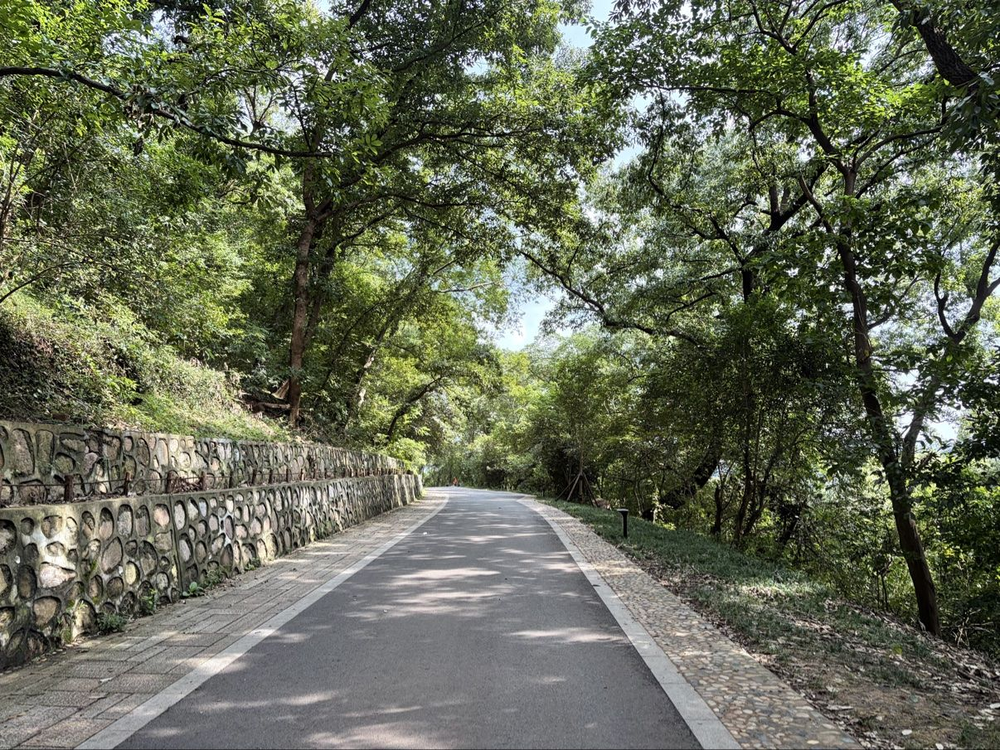
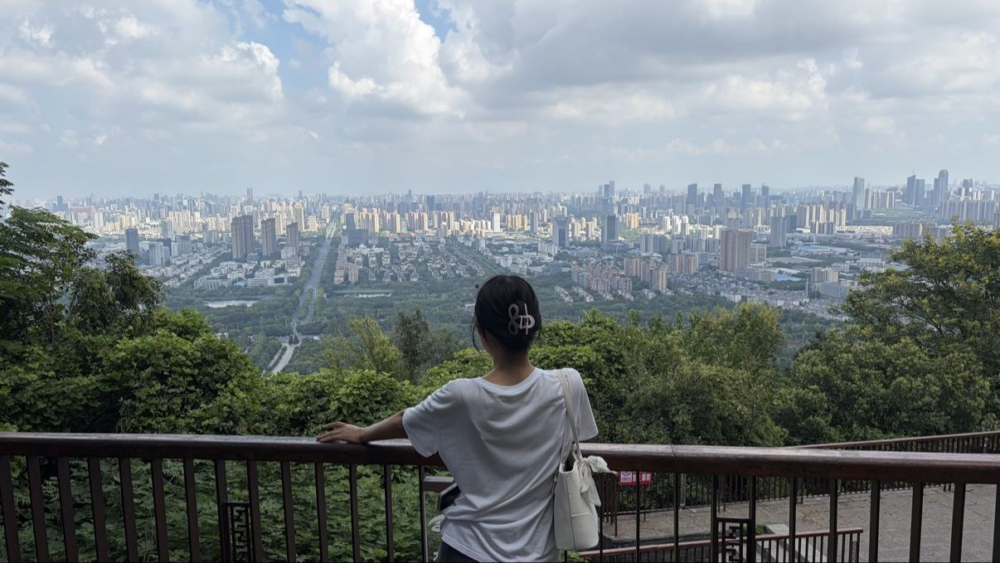
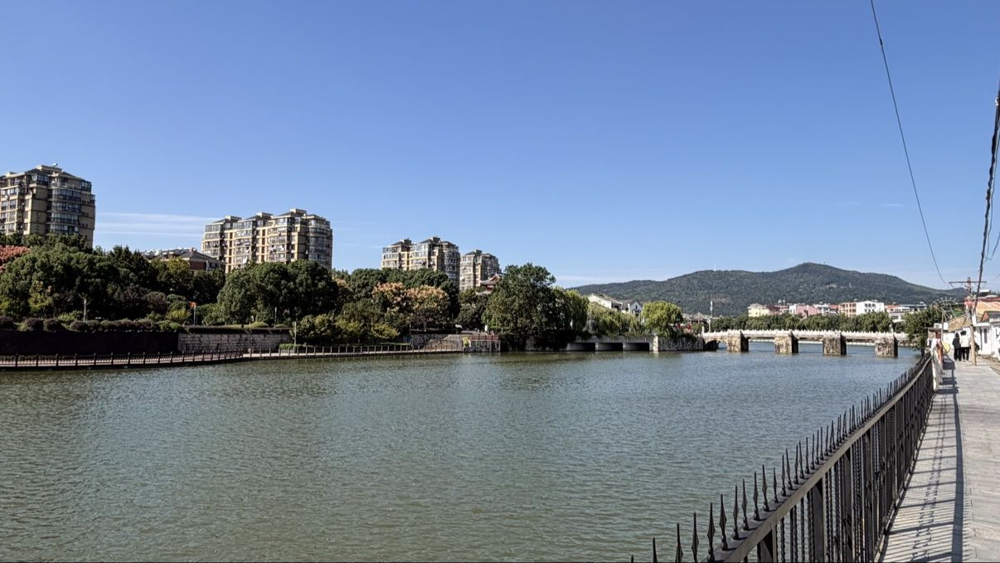
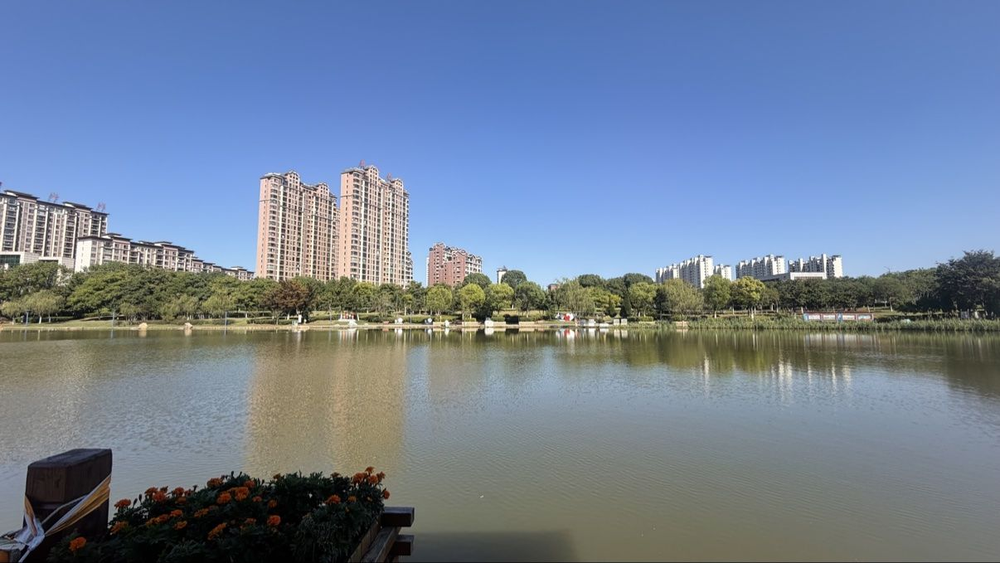
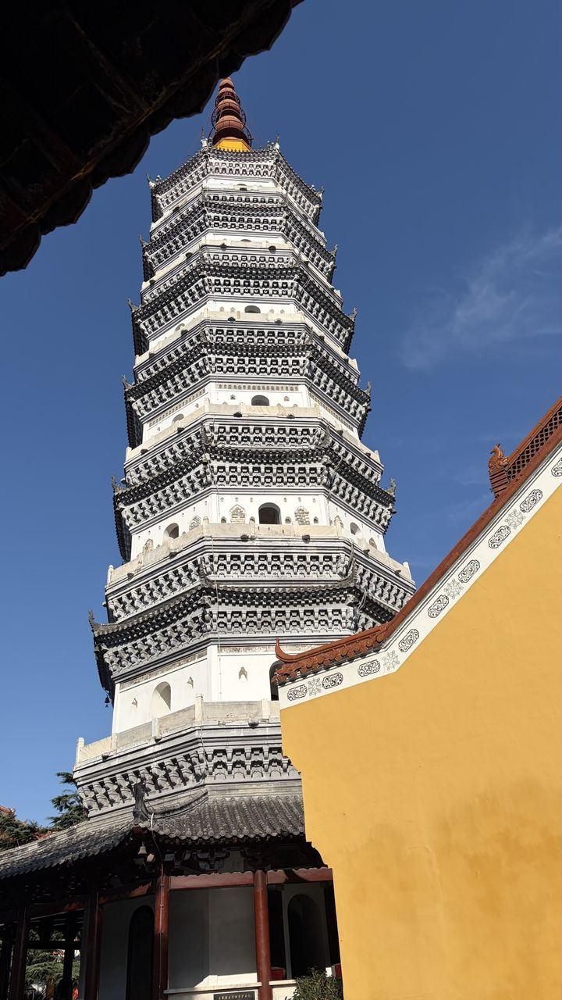
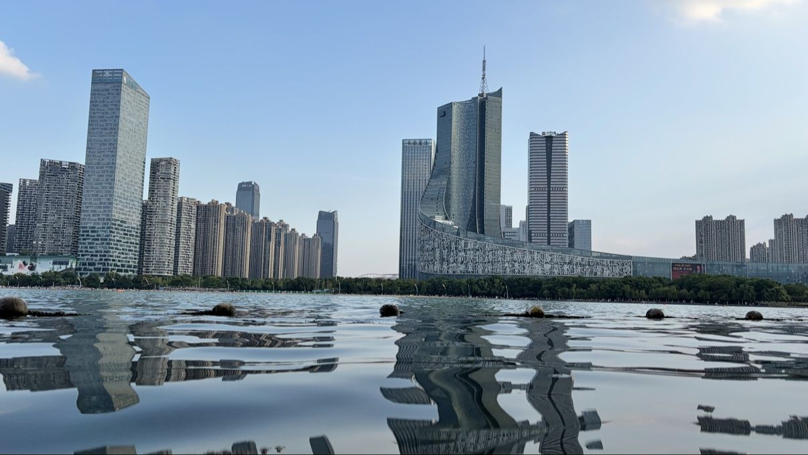
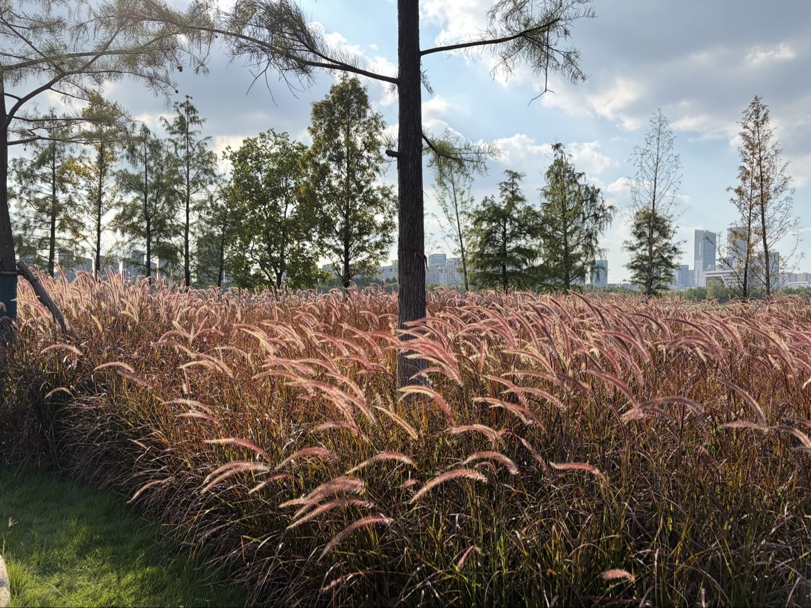
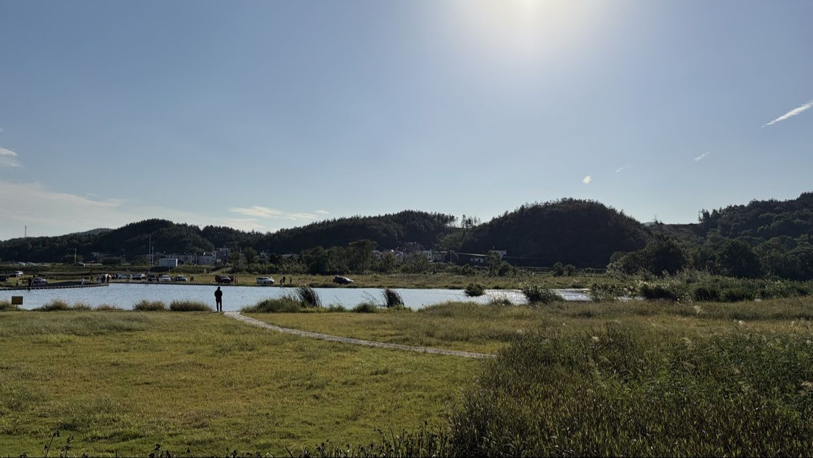

左右滑动或点击箭头浏览 · 点击空白处 / ✕ 关闭
你好，我是 WarmJam —— 这里是我的个人小站，由Meta muse制作。
一个喜欢折腾的普通人。这个小站是我用 GitHub Pages 搭的，不花一分钱。
80 只美股 / 港股 / A股、20 种虚拟货币、ETF 与黄金、11 种货币汇率，还有银行定期存款（汇丰 / 华美 / 招商）和杠杆交易。不懂投资也能玩，新手必读都在里面。







